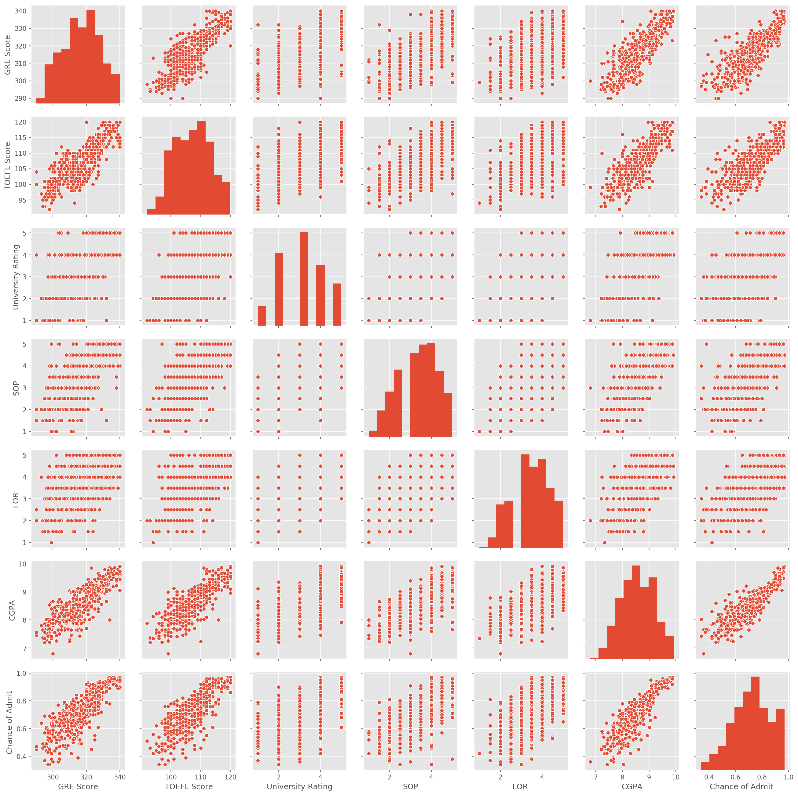

%matplotlib inline
import numpy as np # linear algebra
import pandas as pd # data processing, CSV file I/O (e.g. pd.read_csv)
import matplotlib.pyplot as plt
import seaborn as sns
Read in the dataset
dataset = pd.read_csv("Admission_Predict_Ver1.1.csv")
The dataset has been read successfully. Now it is good that we explore it to understand the features
print(f"The dataset contains {dataset.shape[0]} observations and {dataset.shape[1]} columns")
The dataset contains 500 observations and 9 columns
Let’s have a glimpse on a sample of the dataset.
dataset.sample(5)
| Serial No. | GRE Score | TOEFL Score | University Rating | SOP | LOR | CGPA | Research | Chance of Admit | |
|---|---|---|---|---|---|---|---|---|---|
| 404 | 405 | 311 | 101 | 3 | 2.0 | 2.5 | 7.64 | 1 | 0.62 |
| 435 | 436 | 309 | 105 | 2 | 2.5 | 4.0 | 7.68 | 0 | 0.55 |
| 264 | 265 | 325 | 110 | 2 | 3.0 | 2.5 | 8.76 | 1 | 0.75 |
| 60 | 61 | 309 | 100 | 2 | 3.0 | 3.0 | 8.10 | 0 | 0.48 |
| 424 | 425 | 325 | 114 | 5 | 4.0 | 5.0 | 9.46 | 1 | 0.91 |
**Taken from the data description : ** > The dataset contains several parameters which are considered important during the application for Masters Programs. The parameters included are : > 1. GRE Scores ( out of 340 ) > 2. TOEFL Scores ( out of 120 ) > 3. University Rating ( out of 5 ) > 4. Statement of Purpose and Letter of Recommendation Strength ( out of 5 ) > 5. Undergraduate GPA ( out of 10 ) > 6. Research Experience ( either 0 or 1 ) > 7. Chance of Admit ( ranging from 0 to 1 )
dataset.drop(columns= "Serial No.", axis = 1).describe()
| GRE Score | TOEFL Score | University Rating | SOP | LOR | CGPA | Research | Chance of Admit | |
|---|---|---|---|---|---|---|---|---|
| count | 500.000000 | 500.000000 | 500.000000 | 500.000000 | 500.00000 | 500.000000 | 500.000000 | 500.00000 |
| mean | 316.472000 | 107.192000 | 3.114000 | 3.374000 | 3.48400 | 8.576440 | 0.560000 | 0.72174 |
| std | 11.295148 | 6.081868 | 1.143512 | 0.991004 | 0.92545 | 0.604813 | 0.496884 | 0.14114 |
| min | 290.000000 | 92.000000 | 1.000000 | 1.000000 | 1.00000 | 6.800000 | 0.000000 | 0.34000 |
| 25% | 308.000000 | 103.000000 | 2.000000 | 2.500000 | 3.00000 | 8.127500 | 0.000000 | 0.63000 |
| 50% | 317.000000 | 107.000000 | 3.000000 | 3.500000 | 3.50000 | 8.560000 | 1.000000 | 0.72000 |
| 75% | 325.000000 | 112.000000 | 4.000000 | 4.000000 | 4.00000 | 9.040000 | 1.000000 | 0.82000 |
| max | 340.000000 | 120.000000 | 5.000000 | 5.000000 | 5.00000 | 9.920000 | 1.000000 | 0.97000 |
Visualizations
Let’s visualize the columns to have insights on the dataset
# Plot settings
plt.rcParams["figure.figsize"] = [10,8]
plt.rcParams["figure.dpi"] = 150
plt.style.use("ggplot")
Histograms
dataset.hist(bins = 20);

Insights :
- Most of the continuous numerical columns seem to be relatively normally distributed (gaussian distribution).
- More universities have a ranking of 3⁄5
- There are more students with a Research experience than without.
Correlation among continuous variables
sns.heatmap(dataset.drop(columns= ["Research", "Serial No."]).corr(),
cmap= "viridis", annot = True);
plt.title("Matrix of correlations");

All the variables are positively correlated among them. The weakest correlation is around 0.52 (LOR and GRE Score).
Let’s continue exploring the data by taking a look at the pairplot
sns.pairplot(dataset.drop(columns= ["Research", "Serial No."]));

Modelling
My goal here is to predict the chance of admit using a logistic regression.
from statsmodels.api import Logit
train = dataset.drop(columns= ["Serial No."])
The Research column need to be transformed into a dummy column
train = pd.get_dummies(train, columns= ["Research"], drop_first= True)
from sklearn.linear_model import LogisticRegression
train.head()
| GRE Score | TOEFL Score | University Rating | SOP | LOR | CGPA | Chance of Admit | Research_1 | |
|---|---|---|---|---|---|---|---|---|
| 0 | 337 | 118 | 4 | 4.5 | 4.5 | 9.65 | 0.92 | 1 |
| 1 | 324 | 107 | 4 | 4.0 | 4.5 | 8.87 | 0.76 | 1 |
| 2 | 316 | 104 | 3 | 3.0 | 3.5 | 8.00 | 0.72 | 1 |
| 3 | 322 | 110 | 3 | 3.5 | 2.5 | 8.67 | 0.80 | 1 |
| 4 | 314 | 103 | 2 | 2.0 | 3.0 | 8.21 | 0.65 | 0 |
np.median(dataset["Chance of Admit "])
0.72
Let’s create a binary column called admit from the Chance of Admit column. The threshold is : if Chance of Admit > 0.72 then admit = 1
train["admit"] = dataset["Chance of Admit "].apply(lambda x: 1 if x>0.6 else 0)
train["admit"].value_counts()
1 403
0 97
Name: admit, dtype: int64
logistic = LogisticRegression()
X = train.drop(columns= "Chance of Admit ") # remove
y = train["admit"]
res = logistic.fit(X = X, y = y)
E:\Continuum\anaconda3\lib\site-packages\sklearn\linear_model\logistic.py:433: FutureWarning: Default solver will be changed to 'lbfgs' in 0.22. Specify a solver to silence this warning.
FutureWarning)
prob_admission = []
for not_admitted, admitted in res.predict_proba(X):
prob_admission.append(admitted)
plt.subplot(1,2,1)
plt.hist(dataset["Chance of Admit "], bins = 30)
plt.title("Original")
plt.subplot(1,2,2)
plt.hist(prob_admission, bins = 30)
plt.title("Predicted");

Accuracy
logit_results = pd.DataFrame({"prob_admission":prob_admission,
"chance_of_admit": dataset["Chance of Admit "],
"admitted":res.predict(X)})
logit_results.head()
| prob_admission | chance_of_admit | admitted | |
|---|---|---|---|
| 0 | 0.996440 | 0.92 | 1 |
| 1 | 0.993823 | 0.76 | 1 |
| 2 | 0.977416 | 0.72 | 1 |
| 3 | 0.984955 | 0.80 | 1 |
| 4 | 0.946737 | 0.65 | 1 |
logit_results["prob_admission"] = np.sort(logit_results["prob_admission"])
logit_results["rank"] = np.arange(1, len(logit_results)+1)
sns.scatterplot(x = "rank", y = "prob_admission",
data = logit_results, hue = "admitted");

Linear regression
train.head()
| GRE Score | TOEFL Score | University Rating | SOP | LOR | CGPA | Chance of Admit | Research_1 | admit | |
|---|---|---|---|---|---|---|---|---|---|
| 0 | 337 | 118 | 4 | 4.5 | 4.5 | 9.65 | 0.92 | 1 | 1 |
| 1 | 324 | 107 | 4 | 4.0 | 4.5 | 8.87 | 0.76 | 1 | 1 |
| 2 | 316 | 104 | 3 | 3.0 | 3.5 | 8.00 | 0.72 | 1 | 1 |
| 3 | 322 | 110 | 3 | 3.5 | 2.5 | 8.67 | 0.80 | 1 | 1 |
| 4 | 314 | 103 | 2 | 2.0 | 3.0 | 8.21 | 0.65 | 0 | 1 |
from sklearn.linear_model import LinearRegression
X_linreg = train.drop(columns= ["Chance of Admit ", "admit"])
y_linreg = train["Chance of Admit "]
lin_res = LinearRegression()
lin_res = lin_res.fit(X_linreg, y_linreg)
The shape of the two
plt.subplot(1,2,1)
plt.hist(dataset["Chance of Admit "], bins = 30)
plt.title("Original")
plt.subplot(1,2,2)
plt.hist(lin_res.predict(X_linreg), bins = 30)
plt.title("Predicted");

plt.scatter(dataset["Chance of Admit "], lin_res.predict(X_linreg))
plt.title("Chance of prediction prediction accuracy");
plt.xlabel("Original")
plt.xlabel("Predicted");